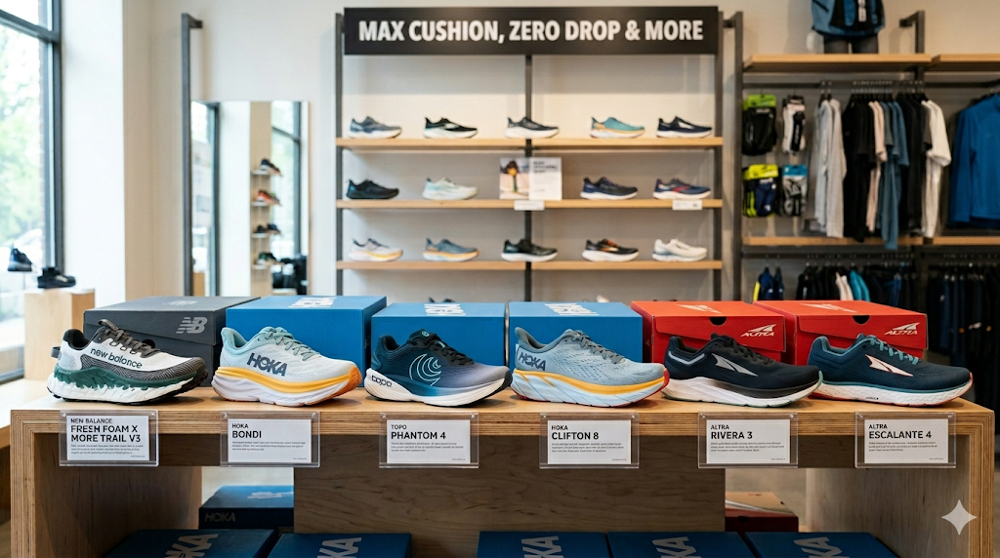
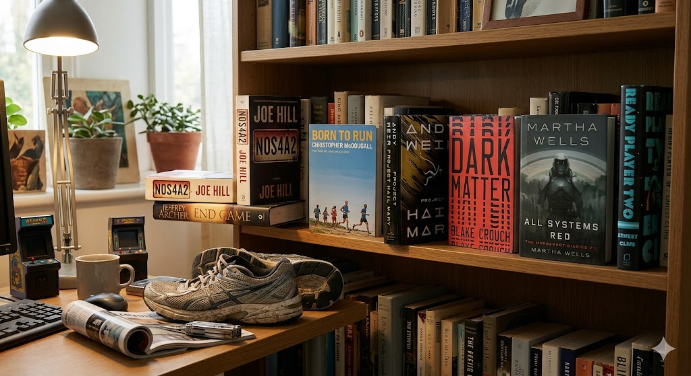

Como tudo começou
O desafio 52@52 nasceu de uma decisão espontânea durante uma prova de trilha de 50 km: transformar o ano em que faço 52 anos em uma jornada de 52 meias maratonas em 52 semanas. O que começou como uma ideia maluca rapidamente virou um compromisso, um blog, um canal no YouTube e uma história que vale ser contada em capítulos. Vinte e seis corridas depois, cruzei oficialmente a linha da metade — e ainda estou de pé, ainda correndo e ainda escrevendo.
Os lugares por onde corri
Em 26 semanas, o desafio me levou por uma variedade impressionante de terrenos e geografias. As trilhas da Bay Area têm sido minha base: a Coyote Creek Trail plana e à beira do córrego, a Stevens Creek Trail bem cuidada, a Iron Horse Trail no nordeste da baía, a Penitencia Creek Trail até o Alum Rock Park, o icônico Golden Gate Park com vista para o oceano, as trilhas da SF Bay perto do Coyote Point e a Los Gatos Creek Trail. Mas o desafio foi muito além da Bay Area: uma corrida enlameada em Rancho San Vicente, o Muddy Dash de Pleasanton, uma corrida ponto a ponto até o Google Café em Mountain View, um passeio a pé pelas ruas de Paris, uma corrida na praia de Maragogi (Brasil), uma corrida solidária em Aracaju em favor dos peixes-boi, uma volta ao redor da Lagoa da Pampulha em Belo Horizonte e uma corrida na esteira do deck de um navio de cruzeiro entre o México e Los Angeles. E a Corrida #25 virou um verdadeiro "run commute", saindo de casa a pé e chegando direto no escritório.
As pessoas que tornaram tudo melhor
A Paula, minha esposa, esteve de bicicleta ao meu lado durante grande parte dessas corridas — equipe de apoio, fotógrafa, videomaker e carregadora de garrafa de água gelada, tudo ao mesmo tempo. Os óculos inteligentes Meta Oakley dela capturaram imagens que eu não conseguiria de nenhuma outra forma. Minha filha Laura se juntou a nós em algumas corridas na Coyote Creek — "melhor equipe do mundo" não é exagero. Amigos como Marco, Marcelo, Hermínio, Derek, Sandro, Yves e Carl participaram de diferentes capítulos, e o Yves até bateu seu recorde pessoal de meia maratona durante a Corrida #13 no Golden Gate Park.
O boletim do corpo
Esta história tem sido tanto sobre ouvir o corpo quanto sobre acumular distância. O joelho direito foi o protagonista do drama nos primeiros meses, gritando em algumas corridas e se comportando quase perfeitamente em outras. A panturrilha esquerda fez participações especiais recorrentes. Trabalho de mobilidade de quadril, alongamentos focados, menos tempo sentado e rodízio de tênis fizeram diferença real. No segundo trimestre, a linha de tendência estava claramente apontando na direção certa: menos dor, mais confiança e zero lesões sérias o suficiente para interromper a sequência.
Os tênis
O desafio virou uma série não oficial de reviews de calçados. Comecei com tênis de trilha New Balance e Hoka Clifton 8, passei pelo Topo Athletic Phantom 4, fiquei uma boa temporada com o Altra Rivera 3 ao mergulhar de volta na filosofia de drop baixo (inspirado por Born to Run) e estreei o Altra Escalante 4 no segundo trimestre. Encontrar o tênis certo para o dia certo continua sendo parte do experimento contínuo.

Combustível e gadgets
Os géis Huma têm sido o combustível consistente para os dias de corrida, e as pastilhas Nuun Sport numa garrafa de água gelada — carregada pela Paula na bicicleta, nunca na bolsa de hidratação — tornaram as corridas nos dias quentes muito mais administráveis. O UCAN Edge fez uma aparição e ganhou o apelido permanente de "gel rebelde." No lado tecnológico: a Insta360 X5, os óculos Meta Oakley, um Google Pixel Watch 4 e um Garmin Venu 2 Plus, às vezes os dois nos mesmos pulsos ao mesmo tempo.
A prateleira de audiolivros
Os livros têm sido uma jornada paralela ao longo dos quilômetros. Veja o que me fez companhia e em quais corridas:
- NOS4A2 – Joe Hill → Corridas 4, 5 e finalizando na Corrida 7. Meu primeiro audiolivro de terror, e uma ótima introdução ao estilo de Joe Hill.
- End Game – Jeffrey Archer → Começou na Corrida 7, continuou pelas semanas seguintes e foi finalizado na Corrida 14. Um thriller político que se estendeu por muitas semanas.
- Born to Run – Christopher McDougall → Corridas 9 e 10. Ouvi na esteira do navio de cruzeiro e de volta nas trilhas de casa — e influenciou diretamente minha volta aos tênis de drop baixo.
- Project Hail Mary – Andy Weir → Corridas 17 e 18. Das margens da Lagoa da Pampulha no Brasil à praia de Maragogi, foi companhia perfeita no calor.
- Dark Matter – Blake Crouch → Começou na Corrida 20 e foi finalizado na Corrida 23. Tão desorientante e envolvente quanto o protagonista da história.
- All Systems Red (The Murderbot Diaries #1) – Martha Wells → Finalizado na Corrida 24, na Penitencia Creek Trail até o Alum Rock. A voz sarcástica do Murderbot foi companhia perfeita para uma corrida solo na garoa.
- Ready Player Two – Ernest Cline → Começou na Corrida 26. A sequência de um dos livros que mais gostei na vida, e uma forma muito adequada de iniciar a segunda metade do desafio.
Várias corridas não tiveram audiolivro — seja por necessidade (rota nova, fones esquecidos, commute urbano barulhento) ou por escolha (passeio em Paris, praia em Aracaju, querendo absorver o ambiente do Brasil).

Resumo de distâncias

Total após 26 corridas: 343,02 milhas / 552,04 km
Os maiores marcos
- Corrida #9: Na esteira de um navio de cruzeiro — provavelmente o cenário mais inusitado do desafio.
- Corrida #11: Golden Gate Park com quase nenhuma dor no joelho — o ponto de virada.
- Corrida #13: Amigos, parque e Yves batendo seu recorde pessoal de meia maratona.
- Corrida #16: Uma corrida turística solo pelas ruas de Paris.
- Corridas #17–19: Brasil — Belo Horizonte, praia de Maragogi, Aracaju.
- Corrida #25: Primeiro "run commute" de verdade — saí de casa a pé e cheguei direto no trabalho.
- Semana das Corridas 24–25–26: Três meias maratonas em uma semana. 39,96 milhas / 64,3 km — a maior semana de corrida da minha vida, superando até a semana da prova de trilha de 50 km de outubro passado.
- Corrida #26: A metade do desafio. 26 concluídas, 26 por vir. Sem lesões sérias. Ainda em pé.
O que a primeira metade realmente diz
As primeiras 26 corridas foram menos sobre distância e mais sobre construir algo duradouro. Corri na lama, na areia, no asfalto, em esteiras, em cascalho de trilha e nas ruas de Paris. Corri doente, cansado, com jet lag, com calor e, em vários momentos, muito feliz. Aprendi mais sobre o meu corpo, meus tênis, minha hidratação, minha forma e meus limites em seis meses de meias maratonas do que em anos de corrida mais casual. E mantive a sequência viva sem nenhuma lacuna permanente. Trezentas e quarenta e três milhas concluídas. Mais trezentas e quarenta pela frente. Até novembro.